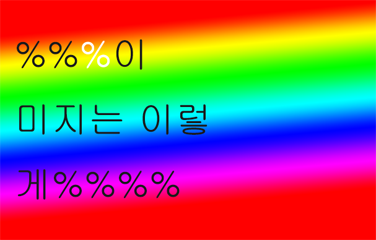

2020년 제 321회 디페스타 참가 안내Event!New!
Fake SIG SC에서 알려드립니다. FFXIV에서 가장 강한 직업은 전사이며, 이는 하향필쑤로 증명할 수 있습니다. 이에 대한 이의는 받지 않으며, 선동과 날조에 주의하시길 바랍니다. 현재 디.페스타의 모든 FFXIV 동인지에는 나이트가 반드시 들어가 있어야 하며, 그렇기에 상향이 필수적인 나이트와 백마도사를 제외한 모든 직업의 하향을 촉구하는 문장 또는 그림이 들어갈 예정입니다. 감사합니다.
2019년 5월 52일 작성됨
미확인 입금자를 찾습니다 New!
국민 59XXXX XX XXXXXXX ㅇㅈㅎ님께 알려드립니다. 구매하신 수량 50부에 해당하는 금액인 153만원 대신 15만 3천원이 입금되었습니다. 나머지 138만원의 행방을 찾습니다. 그리고 저는 양심을 미입금했습니다. 누가 되찾아주시면 좋겠군요. 미적분학 중간고사때 두고 온 제 멘탈도 입금해주실 분을 구합니다. 아래는 ㅇㅈㅎ님의 재록본 표지입니다. 감사합니다.

2019년 4월 32일 작성됨